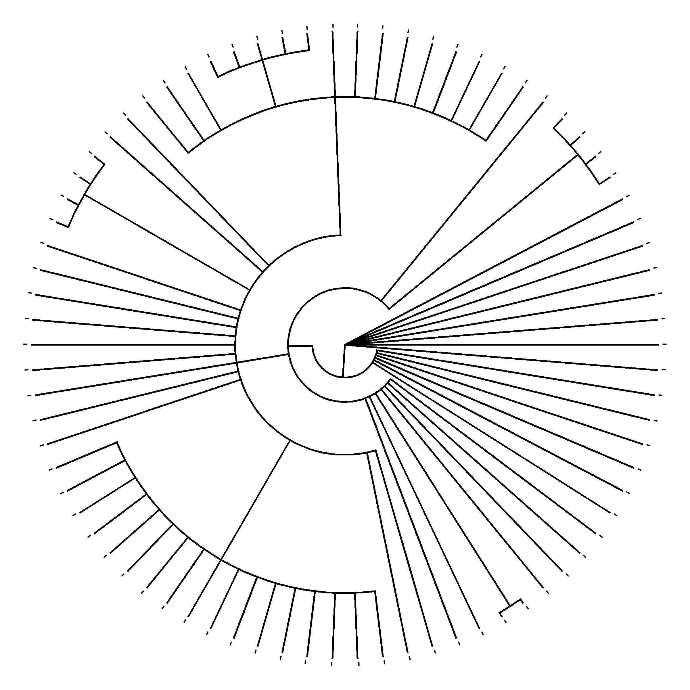

f=function(i){l=ceiling(i/12);u=2*(l-1);
t=(c(1,3,5,7)*45+runif(1,-u,u))*.0174;
m=rnorm(2,0,l/90);s=.707;
x=c(s*cos(t)+m[1]+i%%12,NA);
y=c(s*sin(t)+m[2]-l,NA);
data.frame(x,y)}
df=do.call(rbind,lapply(1:288,f));
plot(-5:25,-30:0,"n",ax=F,an=F,as=1);
polygon(df$x,df$y)This post goes through my experience of using R for GENUARY 2021. GENUARY is a set of daily prompts for generative art. It was a challenge, but I got a lot of it.
The three main takeaways from my experience are:
Having a ‘times-up-step-away-from-the-keyboard’ attitude was vital for getting me through this project. Unfortunately, several works ended up unfinished for what I wanted, and there are probably bugs left in the code. Normally I hate that, but time-based stopping surprisingly set up a good attitude the next day. Having a plan to avoid burn-out is a necessity (like GENUARY warns).
Going wide instead of deep was great for the first GENUARY. I tried as many new packages, programming techniques, and art styles as I could. I’ll mark the packages on at least the first day throughout this post. The R community’s numerous packages and blogposts are incredibly helpful.
ggplot2is amazing to use. This package saves an incredible amount of time. I have an advantage from previous experience, but it is so easy to wrap up a lot of data prep into something nice.
You can check out the code here.
JAN.1 // TRIPLE NESTED LOOP
I started out avoiding for loops (spoiler alert: used on day three). So for this one, I created a double nested tibble to get three layers. The first layer lists coefficients and standard deviations to generate data for a regression. The number of observations and then the raw data are the final two layers. The code runs through linear models for each data set. The output graphs the number of observations on the y axis, the estimated coefficient on x, and the summary statistic for sigma as the size. Color also maps to x. The effect isn’t a complicated picture, but I do like the bubbling up action. I used dplyr, purrr, tidyr, and ggplot2.

JAN.2 Rule 30 (elementary cellular automaton)
I used data.table for data manipulation. The rules increase the dataset by adding new columns and using shift (lead/lag) to get the input subsets. The outcome was supposed to emphasize that each cell depends on three other cells, but I ran out of time before I got anywhere.

JAN.3 Make something human.
The gganatogram package produces the human diagrams. viridis helps with color and gridExtra for layout. The output is accidentally oddly shaped.
JAN.4 Small areas of symmetry.
Blackwork cross stitch serves as the basis here. The small patterns are hardcoded, and I’ll probably try generating them randomly one day.
JAN.6 Triangle subdivision.
A function subdivides the triangles but keeps the same pattern of either lightening or darkening the base color. The colorspace package provides the color manipulation capabilities.
JAN.7 Generate some rules, then follow them by hand on paper.
I didn’t do this one. I took time off because of my birthday and to keep up with the (unrelated) coup attempt.
NA
JAN.8 Curve only.
Pursuit curves set up this work. Several trails of points chase after one point moving around in a circle. The deSolve package handles most of the math.
JAN.9 Interference patterns.
ggforce provides the geom for circles. I’m not sure I really get inference patterns and I feel like this was a swing and a miss from me.
JAN.10 // TREE
Code using ape, phytools, and stringr create and draw a random phylogenetic tree. Where parenthesizes and dashes fall in a string determine the tree’s structure.

JAN.11 Use something other than a computer as an autonomous process (or use a non-computer random source).
Cloudflare’s use of lava lamps for randomness inspired this work. I picked a gif of a lava lamp and convert it to binary using the magick package.
JAN.12 Use an API (e.g. the weather). Here’s a huge list of free public APIs.
I use tidycensus, tidyverse, sf, and ggridges to pull population by county, group by state/territory, average over longitude to create ridges, and center them. I tried this out in Joy Division’s Unknown Pleasures style, but it was too busy for me.
JAN.13 Do not repeat.
I avoided repeating by basing the work on prime numbers using the primes package. I also used the built-in as.roman() function to convert numbers to Roman numerals.
JAN.14 // SUBDIVISION
I really struggled on this one. There are supposed to be four images colored by tvthemes, one for each of the Avatar: The Last Airbender nations. I couldn’t get it to work with any shape that wasn’t a square. I think the real issue is that sf just wasn’t built for what I was trying to do.
JAN.15 Let someone else decide the general rules of your piece.
The rules are from the snakes and ladders board game. The code generates a random board, simulates through several players, and graphs the results. I got to use a while loop since the game doesn’t end until falling precisely on the 100th square.
JAN.16 Circles only
A phyllotaxis arrangement places the circles for this work. This is one of the most simple outputs but still one of my favorites. The 100 small circles repeat in the 16 sets, but sizes change based on their order modulo 16. Within each set, the locations are all the same.
JAN.17 Draw a line, pick a new color, move a bit.
The endpoints of the lines are points on two bounded random walks. I used grid to draw and move separately. The colorspace mixes colors from the endpoint locations. The ragg package helps with drawing over a million lines.
JAN.18 One process grows, another process prunes.
This work samplings points from several normal distributions using MASS for growth. Then samples from smaller normal distributions, find the closest point from the first set, and removes them. The anti_join() function made the pruning very easy. hexbin graphs the final dataset.
JAN.19 Increase the randomness along the Y-axis.
I had a lot of problems with this one too. It was supposed to be based on multi-level modeling, but I couldn’t get it working and ran out of time. This one ended up as samples from t-distributions with decreasing degrees of freedom. The top one is a Cauchy distribution.
JAN.20 No loops.
I wanted something that looked like the code would have loops but then not actually use any. That’s not too difficult with R. The patterns are various hypotrochoids on a grid background.
JAN.21 function f(x) { DRAW(x); f(1 * x / 4); f(2 * x / 4); f(3 * x / 4); }
The recursive code starts with veins growing out of the middle towards the edges of a triangle. They increase in number based on one parameter and decrease in length based on the other. If you look really closely, some lines are drawn over points instead of having all the lines drawn then points. That is done using grid.
JAN.22 Draw a line. Wrong answers only.
This isn’t a line. It’s a circle, a great circle. The additional rnaturalearth, rnaturalearthdata, and geosphere packages provide the data and functions. I had a lot of issues getting randomly drawn maps to look good. So there is only one. I like that it fell on New Zealand, where R originated.
JAN.23 #264653 #2a9d8f #e9c46a #f4a261 #e76f51, no gradients. Optionally, you can use a black or white background.
The Copperajah Pokemon is the foundation here. The colors match the prompt, and the Pokemon’s design provides the shapes. They repeat on grids based on primes numbers, but I don’t think that showed nicely.
JAN.24 500 lines.
This is supposed to be a drawing of my family’s dog. It’s just the head. The eyes, nose, and ears are the darker sections. I use the png package to read in the image and determine the path using TSP to solve the traveling salesman problem. The sampling of points could be a lot better, especially on the edges. Although, I’m not sure 500 lines will cut it here.

JAN.25 Make a grid of permutations of something.
Permutations of quadratic bézier curves provide the grid. The endpoints of each curve are separated one unit horizontally. The interior control points permute around pentagons centered on the endpoints. The change along the x-axis adjusts the first control point while the y-axis has the second. Then, additional bézier curves are created between sets on the same line to connect them nicely.
JAN.26 2D Perspective.
A Hilbert curve is given a few glitches and bent to give a 2D perspective illusion. The Hilbert curve code uses look-up tables for the rules with data.table.
JAN.27 Monochrome gradients without lines.
The output is not monochrome because the prompt didn’t specify that at the beginning of the month. I had the tab open and never hit refresh. So I didn’t know about the update until after I finished. I like the colors from katiejolly/nationalparkcolors and decided to keep them. The shapes are Poisson disk sampled using coolbutuseless/poissoned and outlined using Voronoi diagrams from ggvoronoi. There are multiple layers with decreasing alpha values.

JAN.28 Use sound.
I used Spotify data with the charlie86/spotifyr package for the sound requirement. Each of the lines is a different top 50 song with parameters from their data. The moldach/vapoRwave package provides the colors.
JAN.29 Any shape, none can touch.
ggrepel made this a pretty easy prompt. I copied the text from the Introduction to R section on the R website for the shapes. Their locations are sampled from the R logo. The R logo image is read in and manipulated using imager.
JAN.30 Replicate a natural concept (e.g. gravity, flocking, path following).
I finally got to use rayshader. This gif is supposed to replicate tides. The terrain comes from sampling font with extrafont combined with noise from ambient.
{kind=link}
JAN.31 10 SEARCH FOR “ENO’S OBLIQUE STRATEGIES” 20 OBTAIN ONE 30 THAT IS YOUR PROMPT FOR TODAY
I got ‘Emphasize repetitions’. This work is motivated by the repetitive act of knitting. The shading is normal error on top of an arima model that zig-zags up the y-axis.